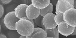

2024年
問題54 微生物とアレルゲンに関する次の記述のうち，最も不適当なものはどれか．
（1）黄色ブドウ球菌は，細菌に分類される．
（2）浮遊ダニアレルゲン粒子の除去にエアフィルタが有効である．
（3）ウイルスは，結露水中で増殖しやすい．
（4）アスペルギルスは，カビアレルゲンとして挙げられる．
（5）ダンプネスは，過度の湿気を原因とするカビ臭さや微生物汚染等の問題が確認できるような状態をいう．
2024年
問題54 正解（3） 頻出度AAA
ウイルスは生きた細胞の中でしか増殖できない．結露水中で増殖するのは真菌である．
ウイルスは DNA や RNA のような遺伝子とそれを囲むタンパク質・脂質の殻しか持っておらず，自分の力では増殖できない．すなわち設計図＝遺伝子はあるが，それをもとに組み立てる設備，材料を持っていないので，他の生きた細胞に入り込んで設計図を用いて自分を複製させる．
-(1) 黄色ブドウ球菌は食中毒を引き起こす細菌で，顕微鏡で見ると，ぶどうの房のように集まっていることから，この名前が付いた（2024-54-1 図参照）．おでき，にきびや，水虫等に存在する化膿性疾患の代表的起因菌で身近に存在する．
食中毒を防ぐには，手指の洗浄・消毒を十分に行い，特に手指などに切り傷や化膿巣のある人は，食品に直接触れたり，調理をしたりしないようにする．

出典 日本細菌学会
https://jsbac.org/
-(2) ダニアレルゲンの大きさは前問解説にあるとおり1～15μmなので，中性能フィルタ（本年度問題73解説参照）でも除去が可能である．
-(4) アスペルギルスは，ペニシリウム，アルテルナリア，フザリウム，クラドスポリウムなどとともに一般環境中にありふれたカビアレルゲンである．アスペルギルス症の原因となる．
-(5) 室内の高湿度状態をダンプネス（Dampness）という．
汗の蒸発を妨げて体感温度を上昇させる（蒸し暑さを感じる）．汗ばみにより衣服等を汚す．建築物に結露が生じ，建材の腐朽，かびやダニが発生する．これによってアレルギー疾患の発症への影響もある．